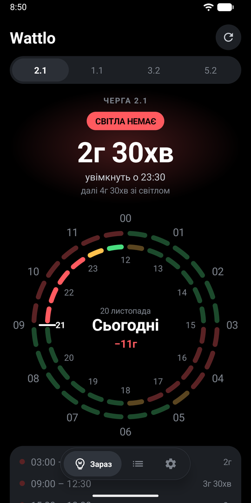
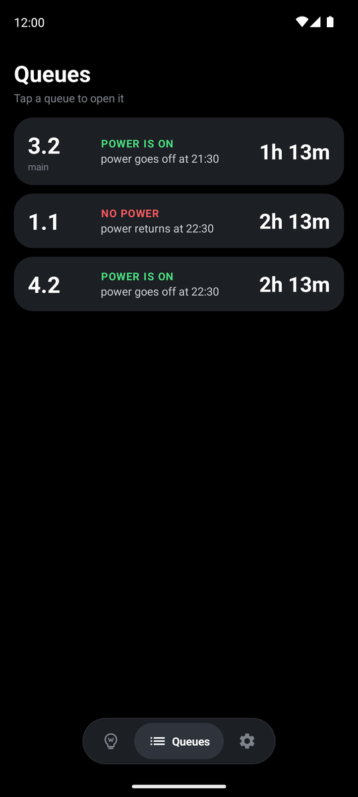
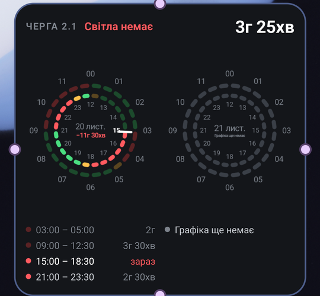
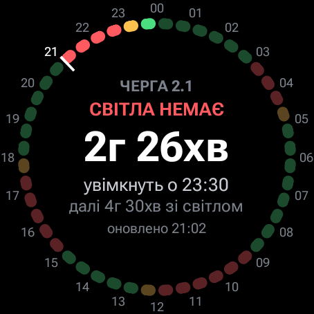

Wattlo
Графік відключень світла на телефоні Android і годиннику Wear OS: чи є світло зараз, скільки лишилось до зміни і що буде далі.




Що вміє
- Годинник: тайл, complication для циферблата і застосунок; працює й без телефона.
- Телефон: стан і відлік, кільце доби, кілька черг (з власними назвами), віджети трьох розмірів, нагадування.
- Регіони: 22 регіони: 21 область (Полтавська, Харківська, Дніпропетровська, Одеська, Київська, Львівська та інші; поки без Донецької, Луганської та Херсонської) і місто Київ.
- Налаштування синхронізуються між телефоном і годинником; мови: українська, російська, англійська.
Wattlo — неофіційний застосунок. Він не пов'язаний із НЕК «Укренерго», Міністерством енергетики, обленерго, ДТЕК, YASNO чи будь-яким іншим оператором мереж. Графіки беруться з публічних джерел (poe.pl.ua, yasno.ua, bezsvitla.com.ua і відкритих файлів на GitHub: outage-data-ua, OE_OUTAGE_DATA, gpv-voe-vinnytsia) і можуть відрізнятися від фактичних відключень. Аварійні й екстрені відключення в графіках зазвичай не відображаються, тож застосунок про них не знає.
Політика конфіденційності · Вихідний код (MIT) · Повідомити про помилку
График отключений света на телефоне Android и часах Wear OS: есть ли свет сейчас, сколько осталось до смены и что будет дальше.
Что умеет
- Часы: тайл, complication для циферблата и приложение; работает и без телефона.
- Телефон: состояние и отсчёт, кольцо суток, несколько очередей (со своими названиями), виджеты трёх размеров, напоминания.
- Регионы: 22 региона: 21 область (Полтавская, Харьковская, Днепропетровская, Одесская, Киевская, Львовская и другие; пока без Донецкой, Луганской и Херсонской) и город Киев.
- Настройки синхронизируются между телефоном и часами; языки: украинский, русский, английский.
Wattlo — неофициальное приложение. Оно не связано с НЭК «Укрэнерго», Министерством энергетики, облэнерго, ДТЭК, YASNO или любым другим оператором сетей. Графики берутся из публичных источников (poe.pl.ua, yasno.ua, bezsvitla.com.ua и открытых файлов на GitHub: outage-data-ua, OE_OUTAGE_DATA, gpv-voe-vinnytsia) и могут отличаться от фактических отключений. Аварийные и экстренные отключения в графиках обычно не отражаются, поэтому приложение о них не знает.
Политика конфиденциальности · Исходный код (MIT) · Сообщить об ошибке
The power outage schedule on an Android phone and a Wear OS watch: is the power on now, how long until it changes, and what comes next.
Features
- Watch: a tile, a watch face complication and the app; it works without a phone too.
- Phone: the state and the countdown, the day ring, several queues (with names of your own), widgets in three sizes, reminders.
- Regions: 22 regions: 21 oblasts (Poltava, Kharkiv, Dnipropetrovsk, Odesa, Kyiv, Lviv and more; not yet Donetsk, Luhansk or Kherson) and the city of Kyiv.
- The settings are synchronised between the phone and the watch; languages: Ukrainian, Russian, English.
Wattlo is an unofficial app. It is not affiliated with Ukrenergo, the Ministry of Energy, any regional power company, DTEK, YASNO or any other grid operator. The schedules come from public sources (poe.pl.ua, yasno.ua, bezsvitla.com.ua and open files on GitHub: outage-data-ua, OE_OUTAGE_DATA, gpv-voe-vinnytsia) and may differ from the actual outages. Emergency outages are usually not part of the published schedules, so the app does not know about them.